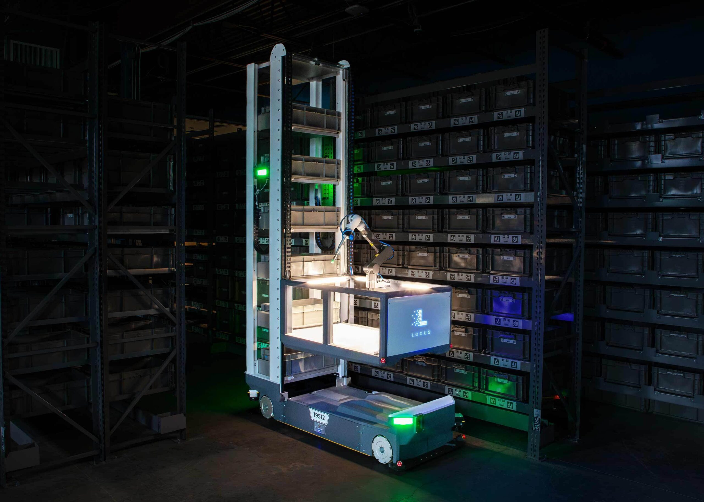

A hand-eye calibration check that finds drift without recalibrating the robot
Array picks items with a 6-DoF arm guided by a multi-camera rig. If the cameras and the arm's own kinematics disagree about where the gripper is, the arm reaches for the wrong spot.
I built the ROS 2 tooling that measures that disagreement and shows where it comes from.
What I built
- Hand-eye calibration validation: fiducials and PnP give the cameras' estimate of the arm pose, forward kinematics gives the arm's own, and TF composition lines the two up.
- Reprojection-error and point-cloud overlay visualizers in OpenCV.
- Runs on Hardware-in-the-Loop benches with NVIDIA Orins.
ROS 2 · OpenCV · PnP · TF · HIL · NVIDIA Orin

HIL bench · NVIDIA Orin
Multi-camera rigfiducial detection → PnP
6-DoF armjoint states → forward kinematics
↓↓
TF composition: camera-to-kinematics agreement
↓↓
Reprojection errorOpenCV
Point-cloud overlayOpenCV
→ diagnose drift without recalibrating or adding hardware
Also at Locus
- Gazebo
- Integrated the arm and camera rig into Gazebo simulation, so picking-system work can happen without a robot.
- Grafana / VictoriaMetrics
- Dashboards tracking network health and Array's pick performance across the fleet at customer sites.
- ROS
- Controller-board telemetry into ROS, for lighting control.
- CI
- State-machine diagrams generated in CI, so the architecture docs can't fall out of sync with the code.